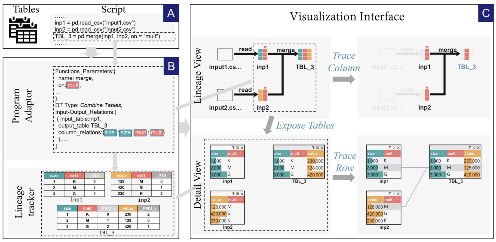
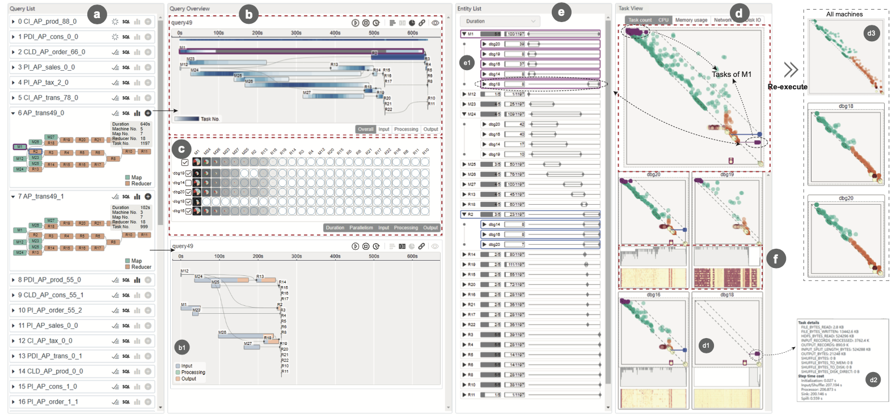
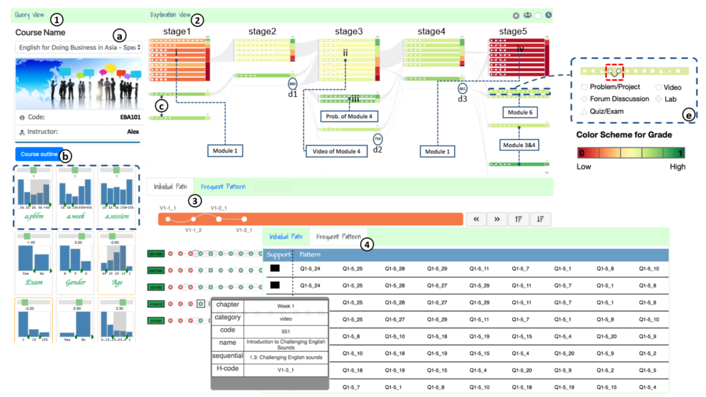
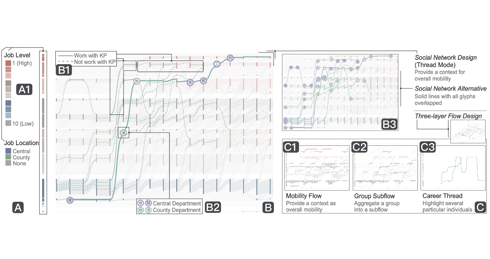
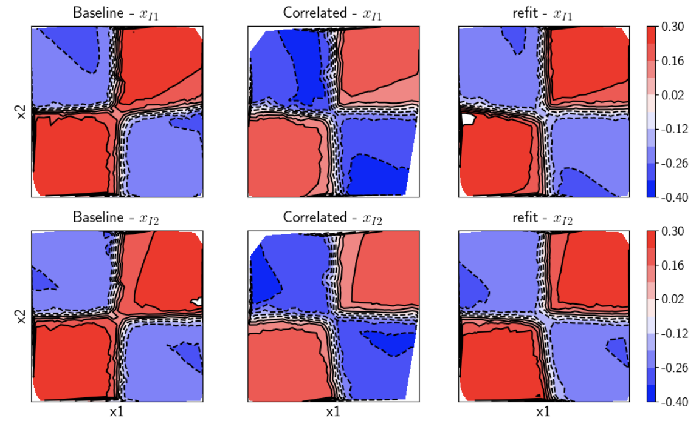
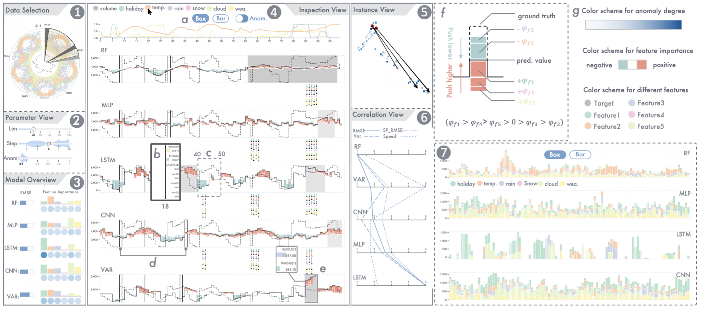
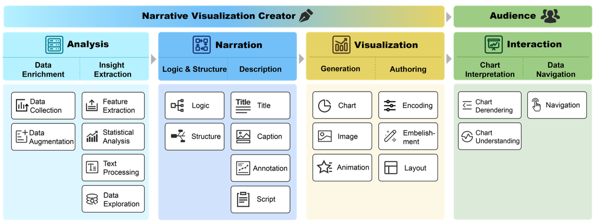
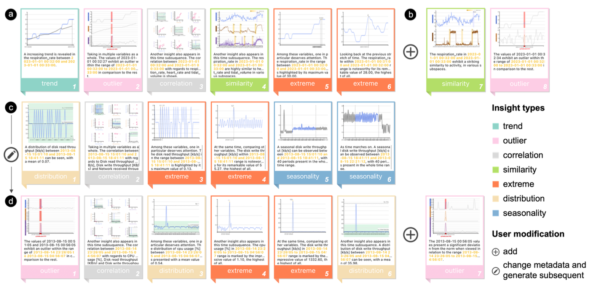
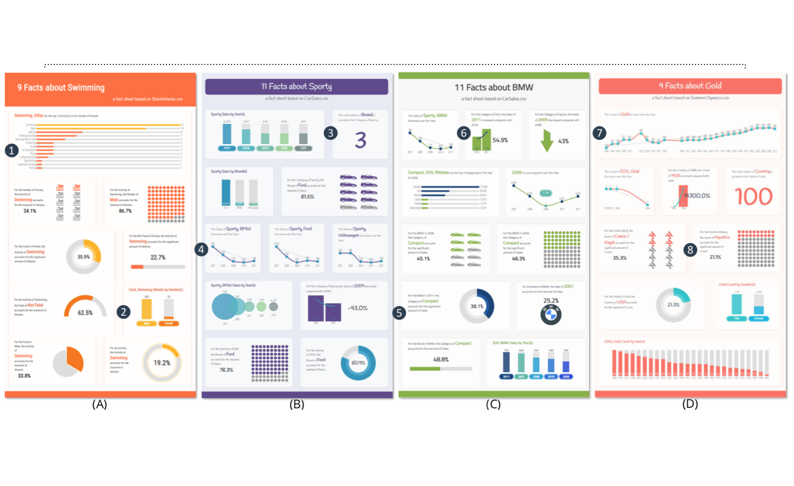

Hi, I am Ke Xu (徐科)
I am a tenure-track associate professor at School of Intelligence Science and Technology, Nanjing University, and I am also a member of PRLab@NJU. Previously, I have worked at Huawei as a "Genius Youth" (“天才少年”计划) where I led the team to build Huawei's first intelligent, AI-augmented and easy-to-use data visual analysis platform DataArts Insight. I was also a postdoctoral research associate at New York University (NYU), advised by Prof. Claudio Silva and Prof. Enrico Bertini and a visiting scholar worked with Prof. Hanspeter Pfister at Harvard University.
I earned my Ph.D. in Department of Electronic and Computer Engineering from the Hong Kong University of Science and Technology (HKUST) in 2019, where I worked with my supervisor Prof. Huamin Qu. Prior to my Ph.D. studies, I received my B.S. in Electronic Science and Engineering from Nanjing University (NJU) in 2015.
Contact: xuke@nju.edu.cn | Google Scholar |
We welcome undergraduate/graduate students, post-docs, research assistants and visiting interns/scholars. Please drop me an email if you are interested in our group.
课题组长期欢迎优秀的同学加入：
还有26年研究生名额1名，26年考核制博士生名额1位，实习生名额若干
欢迎有AI、大数据分析、可视化和人机交互方向科研经历、学科竞赛获奖的同学邮件联系我。此外也接收对相关方向感兴趣的本科同学进组学习与科研。
Research
My research interests, broadly, are AI-Driven Big Data Analytics, Visulization, Human-Computer Interaction and AI4Science. Specifically, I am interested in domains of visual anomaly detection, explainable AI, automated data insights, temporal data analytics and healthcare. My representative works include the ECGLens and Clouddet for visual anomaly detection in healthcare and cloud computing, respectively, the mTseer for explainable AI and a Survey for narrative visualization. I have won the ACM CHI 2018 Best Paper Honorable Mention Award.
News
| Mar 2025 | HYPNOS has been accepted by IEEE TVCG |
| Feb 2025 | A survey paper on Narrative Visualization has been Published by IEEE TVCG |
| Jun 2024 | 首届 华为杯无畏契约比赛亚军 (HW VCT) |
| Aug 2023 | Huawei's first BI product DataArts Insight developed by my team, is now open for public testing |
| July 2023 | Two papers QEVIS & Visail were accpected by IEEE VIS 2023 |
| Mar 2021 | CareerLens were accpected by TVCG 2021 |
| Jan 2021 | mTSeer were accpected by CHI 2021 |
Data Intelligence

HYPNOS: Interactive Data Lineage Tracing for Data Transformation Scripts
TVCG IEEE Transactions on Visualization and Computer
Graphics, 2025.
Download: [pdf]

QEVIS: Multi-grained Visualizing of Distributed Query Execution
TVCG VIS IEEE Transactions on Visualization and Computer
Graphics, 2023.
Download:
 CloudDet: Interactive Visual Analysis of Anomalous Performances in
CloudDet: Interactive Visual Analysis of Anomalous Performances in
Cloud
Computing Systems
TVCG VAST IEEE Transactions on Visualization and Computer
Graphics, 2019
Download: [pdf][video]

MOOCad: Visual Analysis of Anomalous Learning Activities in
Massive Open
Online Courses
EuroVis 21th EG/VGTC Conference on
Visualization (Short Paper), 2019
Download: [pdf][video]
 EnsembleLens: Ensemble-based Visual Exploration of Anomaly Detection
EnsembleLens: Ensemble-based Visual Exploration of Anomaly Detection
Algorithms with Multidimensional Data
TVCG VAST IEEE Transactions on Visualization and Computer
Graphics, 2018.
Download: [pdf][video]
 ECGLens: Interactive Visual Exploration of Large Scale ECG Data for Arrhythmia
ECGLens: Interactive Visual Exploration of Large Scale ECG Data for Arrhythmia
Detection
CHI Proceedings of the SIGCHI Conference
on Human Factors in Computing Systems, 2018.
Download: [pdf] [video] [video (long)] Best Paper Honorable Mention (top 5% of
all submissions)

Interactive Visual Exploration of Longitudinal
Historical Career Mobility Data
TVCGIEEE Transactions on Visualization
and Computer
Graphics, 2021.
Download: [pdf]
 EventThread: Visual Summarization and Stage Analysis of Event Sequence
Data
EventThread: Visual Summarization and Stage Analysis of Event Sequence
Data
TVCG VAST Proceedings of the IEEE Visual Analytics Science and
Technology, 2017.
Download: [pdf]
Explainable AI

Towards Ground Truth Explainability on Tabular Data
ICML ICML workshop on Human
Interpretability in Machine Learning (WHI), 2020.
Download: [pdf]

mTSeer: Interactive Visual Exploration of Models on Multivariate Time-series
Forecast
CHI Proceedings of the SIGCHI Conference
on Human Factors in Computing Systems, 2021.
Download: [pdf]
Infographic, Automated Design, Storytelling

Leveraging Foundation Models for Crafting Narrative Visualization: A Survey
TVCG IEEE Transactions on Visualization and Computer
Graphics, 2025.
Download: [pdf]

Supporting Guided Exploratory Visual Analysis on Time Series Data with
Reinforcement Learning
TVCG VIS IEEE Transactions on Visualization and Computer
Graphics, 2023.
Download:

DataShot: Automatic Generation of Fact Sheets from Tabular Data
TVCG InfoVis IEEE Transactions on Visualization and Computer
Graphics, 2019.
Download: [pdf]
Work Experience
| Jan 2020 - Dec 2020 | New York University, New York, U.S. | |
| Visiting Scholar (with Prof. Enrico Bertini and Prof. Claudio Silva), VIDA Lab | ||
| May 2019 - Aug 2019 | Harvard University, Boston, U.S. | |
| Research Associate (with Prof. Hanspeter Pfister), Visual Computing Group | ||
| Jan 2019 - May 2019 | Microsoft Research Asia, Beijing, China | |
| Research Intern, Software Analytics Group | ||
| Jul 2015 - Aug 2019 | Hong Kong University of Science and Technology, Clear Water Bay, Hong Kong | |
| Ph.D Candidate, VisLab | ||
| Feb 2017 - Sept 2017 | Tongji University, Shanghai, China | |
| Visiting Scholar (with Prof. Nan Cao), iDVx Lab | ||
| Dec 2014 – Apr 2015 | Nanjing University, Nanjing, China | |
| Research Assistant, Microelectronics Design Institute | ||
| Jun 2014 – Sept 2014 | McGill University, Montreal, Canada | |
| Summer Intern (with Prof. Kirk), Department of Material Engineering |
Awards
| Jan 2021 | Huawei "Young Genius" (天才少年) Program |
| Feb 2018 | Best Paper Honorable Mention Award, CHI'18 |
| ACM CHI Conference | |
| Jun 2015 | Excellent Graduate of Nanjing University |
| Nanjing University | |
| Oct 2014 | First Prize of Red Sun Scholarship |
| Nanjing University | |
| Jun 2014 | Canadian Globalink Research Internship Award |
| Mitacs | |
| Oct 2013 | Baosteel Scholarship |
| Baosteel Group, Nanjing University,
for 2 of Sophomores in Nanjing University |
|
| Oct 2012 | National Scholarship |
| Ministry of Education of the People’s Republic of China |
Teaching
Current
Probability and Statistics (概率论与数理统计) for Undergraduate Students at Nanjing University (NJU, Fall 2025)
Talks
| Aug 2023 | 华为云下一代商业智能能力解析 |
| Tongji University, Shanghai, China | |
| Jul 2022 | DataArts Studio 典型场景应用预览(DataArts Studio: Typical Scenario Application Preview) |
| Huawei Partner and Developer Conference (HDPC), Hangzhou, China | |
| May 2021 | mTSeer: Interactive Visual Exploration of Models on Multivariate Time-series Forecast |
| ACM CHI Conference, Yokohama, Japan | |
| Oct 2019 | CloudDet: Interactive Visual Analysis of Anomalous Performances in Cloud Computing Systems |
| IEEE VIS Conference, Vancouver, Canada | |
| Oct 2018 | EnsembleLens: Ensemble-based Visual Exploration of Anomaly Detection Algorithms with Multidimensional Data |
| IEEE VIS Conference, Berlin, Germany | |
| Apr 2018 | ECGLens: Interactive Visual Exploration of Large Scale ECG Data for Arrhythmia |
| ACM CHI Conference, Montreal, Canada |